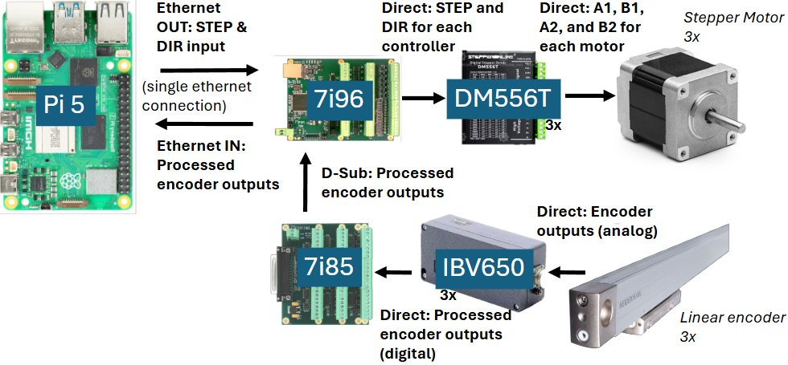

01 System level wiring diagram

The master wiring diagram covering motion control, limit switches, linear scales, and pneumatic valves. The color coded harness map made assembly fast and debugging survivable, and every reference cross links to its LinuxCNC HAL pin, so the document answers questions instead of raising them.